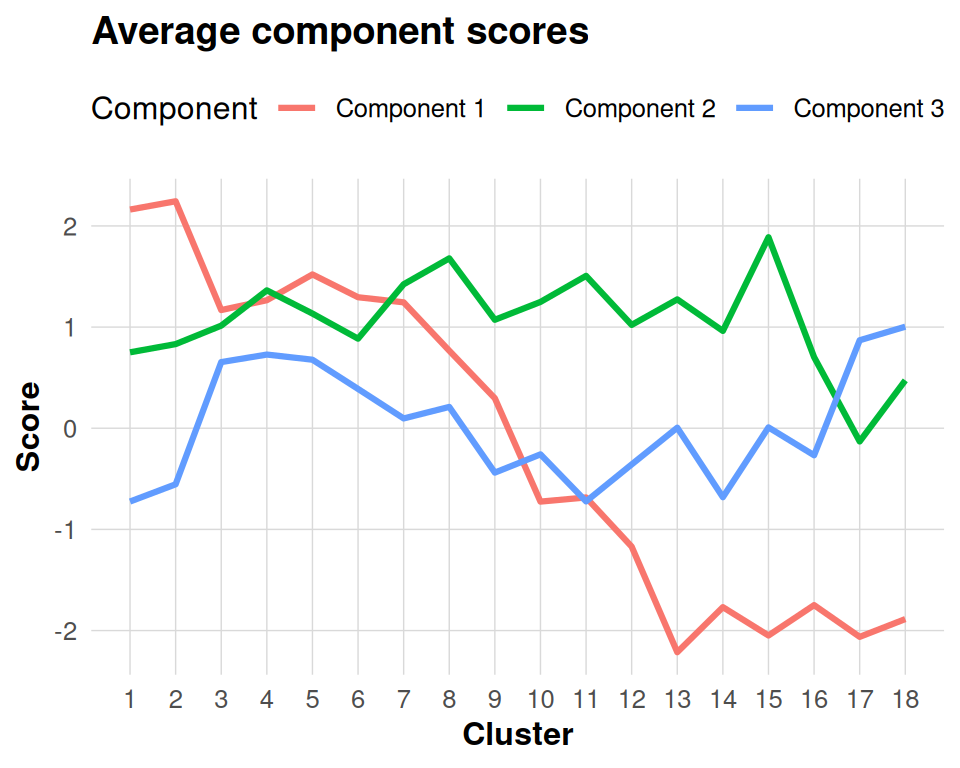

This vignette asks how a fitted component is expressed in effect space and on a shared toy cluster grid. It then shows rotation and projection without treating those descriptive operations as inferential results.
Example Fit
library(dkge)
S <- 4; q <- 5; P <- 18; T <- 70
effect_names <- paste0("effect", seq_len(q))
cluster_names <- paste0("cluster", seq_len(P))
cluster_axis <- seq(-1, 1, length.out = P)
shared_signal <- rbind(
exp(-4 * (cluster_axis + 0.45)^2),
-exp(-4 * (cluster_axis - 0.45)^2),
cluster_axis,
rep(0, P),
rep(0, P)
)
betas <- lapply(seq_len(S), function(s) {
B <- shared_signal + matrix(rnorm(q * P, sd = 0.35), q, P)
dimnames(B) <- list(effect_names, cluster_names)
B
})
designs <- replicate(S, {
X <- matrix(rnorm(T * q), T, q)
X <- qr.Q(qr(X))
colnames(X) <- effect_names
X
}, simplify = FALSE)
subjects <- lapply(seq_len(S), function(s) dkge_subject(betas[[s]], designs[[s]], id = paste0("sub", s)))
bundle <- dkge_data(subjects)
fit <- dkge(bundle, K = diag(q), rank = 3)By default dkge() accumulates subject contributions in
the shared effect space and diagonalizes the pooled moment. To request
joint diagonalization of the subject matrices instead, set
solver = "jd" (and optionally pass
jd_control = dkge_jd_control(...) to configure the
optimizer). Treat agreement or disagreement with the pooled solution as
a model comparison; the solver choice does not guarantee greater
stability.
fit_jd <- dkge(bundle,
K = diag(q),
rank = 3,
solver = "jd",
jd_control = dkge_jd_control(maxit = 200, tol = 1e-8))Both solvers return the same object structure (fit$U,
fit$Chat, projections, etc.), so the subsequent workflow in
this vignette applies unchanged regardless of the solver choice.
Inspect Loadings and Scores
round(fit$U, 3) # effect-space loadings
#> [,1] [,2] [,3]
#> [1,] 0.342 0.747 0.534
#> [2,] 0.456 -0.639 0.447
#> [3,] -0.818 -0.030 0.437
#> [4,] -0.056 -0.022 -0.039
#> [5,] 0.055 0.179 -0.568
lapply(fit$Btil, function(Bts) round(Bts[, 1:3, drop = FALSE], 2))[1]
#> [[1]]
#> cluster1 cluster2 cluster3
#> effect1 1.28 1.85 0.18
#> effect2 0.33 0.37 0.32
#> effect3 -2.08 -1.85 -0.95
#> effect4 -0.15 -0.86 0.21
#> effect5 0.81 -0.78 -2.29The columns of fit$U represent the loadings for each
component in the effect space. These loadings define how the original
design effects combine to form the extracted components. The
Btil element stores the subject-specific beta matrices
after row-standardization, which ensures comparable scaling across
subjects. To obtain cluster scores for each component, these
standardized betas are multiplied with the corresponding columns of
fit$U.
Projecting Subjects into Component Space
subject_scores <- dkge_project_btil(fit, fit$Btil)
str(subject_scores, max.level = 1)
#> List of 4
#> $ : num [1:18, 1:3] 2.339 2.324 0.844 1.03 1.314 ...
#> ..- attr(*, "dimnames")=List of 2
#> $ : num [1:18, 1:3] 1.78 1.62 1.73 0.98 1.94 ...
#> ..- attr(*, "dimnames")=List of 2
#> $ : num [1:18, 1:3] 1.715 2.515 0.924 1.741 2.142 ...
#> ..- attr(*, "dimnames")=List of 2
#> $ : num [1:18, 1:3] 2.818 2.517 1.179 1.312 0.685 ...
#> ..- attr(*, "dimnames")=List of 2Each subject score matrix has dimensions clusters × components. Cluster rows are only comparable across subjects when they already refer to the same spatial support. This simulation deliberately uses a shared 18-cluster indexing scheme, so a row-wise mean is meaningful. With subject-specific parcellations, first transport the scores to a common medoid, anchor, or voxel space; equal matrix dimensions alone do not establish anatomical correspondence.
avg_scores <- Reduce("+", subject_scores) / length(subject_scores)
avg_df <- as.data.frame(avg_scores)
component_cols <- paste0("Component ", seq_len(ncol(avg_df)))
names(avg_df) <- component_cols
avg_df$Cluster <- seq_len(nrow(avg_df))
avg_long <- tidyr::pivot_longer(avg_df,
cols = seq_along(component_cols),
names_to = "Component",
values_to = "Score")
ggplot(avg_long, aes(x = Cluster, y = Score, colour = Component)) +
geom_line(linewidth = 1.1) +
labs(title = "Average component scores", y = "Score") +
scale_x_continuous(breaks = seq_len(nrow(avg_scores))) +
theme(legend.position = "top")
The plot summarizes expression on this shared toy grid. It is descriptive: a large value identifies a cluster-component pairing to inspect, not a significant spatial effect.
Rotating Components
The dkge_procrustes_K() function provides a principled
way to rotate components toward a target basis, such as canonical
contrasts or previously established loadings from prior studies. This
rotation preserves the mathematical properties of the solution by
staying within the design-kernel metric space.
# target basis: identity for first two effects
B_target <- dkge_k_orthonormalize(diag(1, q)[, 1:2], fit$K)
rot <- dkge_procrustes_K(B_target, fit$U[, 1:2], fit$K)
round(rot$U_aligned, 3)
#> [,1] [,2]
#> [1,] 0.796 -0.207
#> [2,] -0.207 0.757
#> [3,] -0.540 -0.615
#> [4,] -0.053 -0.029
#> [5,] 0.174 -0.071The returned rot$U_aligned is the fitted basis rotated
toward B_target. rot$d reports the objective
actually achieved by rot$R; when reflections are forbidden,
it can be smaller than rot$unconstrained_d.
Projecting New Data
new_beta <- matrix(rnorm(q * P), q, P)
projected <- dkge_project_clusters(fit, new_beta)
head(projected)
#> [,1] [,2] [,3]
#> [1,] 0.109688 0.0776 -0.12167
#> [2,] 0.000515 -0.3380 -0.53417
#> [3,] -0.273249 0.2488 -0.07049
#> [4,] -0.204818 -0.0151 -0.15044
#> [5,] 0.018553 0.0610 0.10772
#> [6,] -0.063557 -0.0554 -0.00225The dkge_project_clusters() function returns component
scores for each cluster in the new data, providing a standardized
representation that is ready for subsequent analyses such as contrast
testing or optimal transport mapping to reference parcellations.
Interpreting Components
Several outputs answer different interpretive questions.
fit$weights contains one fitting weight per subject, not a
component-specific contribution. For component-specific participation,
inspect fit$contribs,
dkge_plot_subject_contrib(), or
dkge_subject_component_projections(). fit$v
concatenates subject-block cluster loadings; interpret its rows
spatially only when the blocks share a declared support or after
transport to a common space. Finally,
dkge_component_stats() supplies component summaries under
its chosen mapper and inference assumptions. Those assumptions and the
target of inference must be reported; the function does not make every
extracted component generically “significant.”